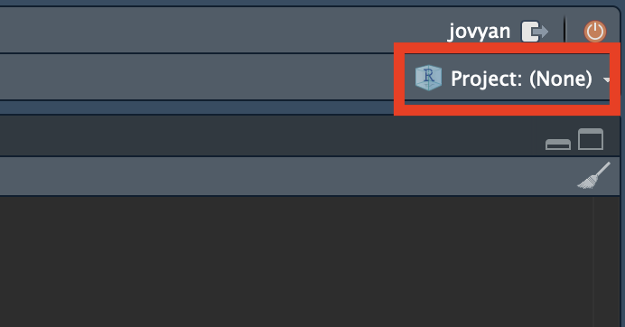
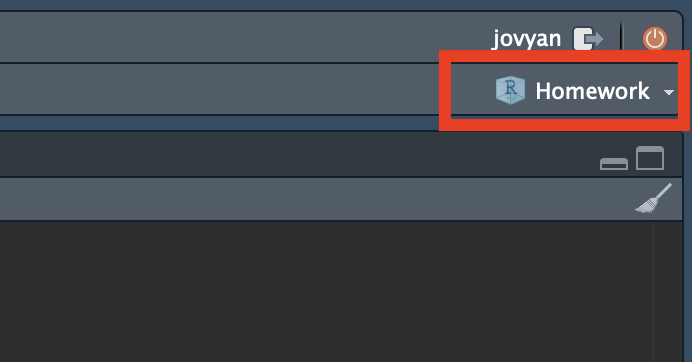
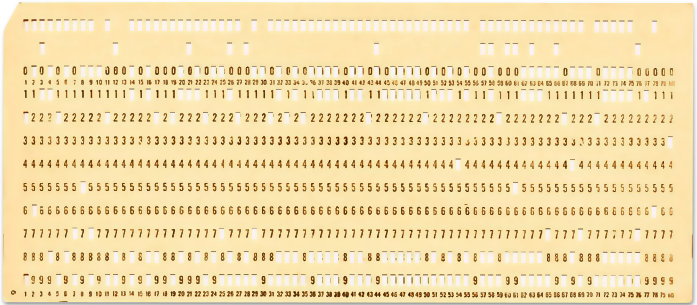

ミクロ政治データ分析実習
4/ Rプログラミングの基本的な概念
関西大学総合情報学部
ファイルシステム
ファイル・システムとは
（本講義の内容に限定すると）パソコン内のファイルのあり方
- PC内には数万以上のファイルが存在する。
- これらのファイルは一つに部屋に存在するのではなく、複数のフォルダー1（folder）に分かれて保存されている。
- この授業の履修者もそれぞれの授業に関するファイルを一つの箇所でなく、科目名のフォルダーを作ってその中に保存しているはず。
- フォルダーの概念がないと…
- 同じファイル名が使えない。
- 管理が大変
- 欲しいファイルが見つけにくいなどデメリットしかない。
- 最近のソフトウェア/アプリではファイルの選択をフォルダーをクリックしながら行うが、Rを含むほぼ全ての言語ではファイルの住所（\(=\)パス）を直接書く必要がある。
パス（path）の書き方
levelName
1 .
2 ¦--ReadMe.docx
3 ¦--Day01
4 ¦ ¦--Day01.Rproj
5 ¦ ¦--Script01.R
6 ¦ ¦--Script02.R
7 ¦ ¦--Data
8 ¦ ¦ ¦--raw_data.csv
9 ¦ ¦ °--cleaned_data.csv
10 ¦ °--Figs
11 ¦ ¦--Figure01.png
12 ¦ °--Figure02.png
13 °--Day02
14 ¦--Day02.Rproj
15 ¦--Script01.R
16 ¦--Document01.qmd
17 ¦--Document01.html
18 ¦--Data
19 ¦ °--my_data.csv
20 °--Figs
21 ¦--Old
22 ¦ ¦--Figure01.pdf
23 ¦ ¦--Figure02.pdf
24 ¦ °--Figure03.pdf
25 °--New
26 °--Figure01.png以下はJDCat分析ツールと同じLinuxの書き方（macOSも同様）
- 通常、ファイル＆フォルダーの構造はツリー（tree）構造で表現される。
- パスは
/（最上位フォルダー）で始まり、フォルダーは/で区切る。- 最後はファイル名
- 一部の例外を除き、ファイルの名前は「
ファイル名.拡張子」 - 拡張子はそのファイルの性質を表す。
- 2行目のファイル
/ReadMe.docx
- 6行目のファイル
/Day01/Script02.R
- 9行目のファイル
/Day01/Data/cleaned_data.csv
- 26行目のファイル
/Day02/Figs/New/Figure01.png
絶対パスと相対パス
levelName
1 .
2 ¦--ReadMe.docx
3 ¦--Day01
4 ¦ ¦--Day01.Rproj
5 ¦ ¦--Script01.R
6 ¦ ¦--Script02.R
7 ¦ ¦--Data
8 ¦ ¦ ¦--raw_data.csv
9 ¦ ¦ °--cleaned_data.csv
10 ¦ °--Figs
11 ¦ ¦--Figure01.png
12 ¦ °--Figure02.png
13 °--Day02
14 ¦--Day02.Rproj
15 ¦--Script01.R
16 ¦--Document01.qmd
17 ¦--Document01.html
18 ¦--Data
19 ¦ °--my_data.csv
20 °--Figs
21 ¦--Old
22 ¦ ¦--Figure01.pdf
23 ¦ ¦--Figure02.pdf
24 ¦ °--Figure03.pdf
25 °--New
26 °--Figure01.png- 絶対パス：必ず最上位フォルダー（
/）から始まるパス- 長い
- 相対パス：作業フォルダーを基準としたパス
- 短い（作業フォルダーまでのパスが省略される）
/で始まらない
- 作業フォルダーが
/Day01/の場合- 6行目のファイル
- 絶対パス：
/Day01/Script02.R - 相対パス：
Script02.R
- 絶対パス：
- 9行目のファイル
- 絶対パス：
/Day01/Data/cleaned_data.csv - 相対パス：
Data/cleaned_data.csv
- 絶対パス：
- 6行目のファイル
- 相対パスの方が短いため、より効率的なコーディングが可能に
- フォルダー構造が複雑であるほど、相対パスが効率的
- 作業フォルダーってどう指定すれば良いだろう
- \(\Rightarrow\) プロジェクト機能
- 現在の作業フォルダーはRコンソール上で
getwd()を入力すれば確認可能
プロジェクト機能
RStudioのプロジェクト機能
- 作業フォルダー（working directory/working folder）が任意のフォルダーに固定される。
- 固定先は
プロジェクト名.Rprojファイルが位置するフォルダー
- 固定先は
- プロジェクト機能を使用中の場合、RStudioの右上にプロジェクト名が表示される。
- 使っていない場合は、Project: (none)と表示される。
- プロジェクト機能のメリット
- 相対パスを使用することによって、パスをより簡潔に表現できる。
- ローカル版のR/RStudioを使う場合、プロジェクトをDropbox等に入れておくと、どこでも作業を再開することができる。
- 相対パスを使う = パスの書き方が変わらない
- macOS \(\leftrightarrow\) Windowsのクロスプラットフォームも可能
- プロジェクト機能のデメリット
- なし（ただし、これまでプロジェクト機能を使ってこなかった自分のことが嫌いになる可能性がある）
プロジェクトの作成

プロジェクトの確認
RStudioの右上を確認
- 何かしら計算/分析の結果を残しておきたい場合は必ずプロジェクト機能を使う。
- 電卓程度の用途なら不要


プロジェクトの再開
作業環境
作業環境（Environment）
- R/RStudioを起動すると、Rセッションが開始され、作業環境が生成される。
- 作業環境内には自分が作成したオブジェクト（後述）や読み込んだパッケージが格納される。
- 「R/RStudioの終了」 = 「Rセッションの終了」を意味し、作業環境がリセットされる。
- コードをスクリプトファイルとして保存しておく必要性
- 保存したコードを開き、実行すれば再現可能
- パッケージも再度読み込む必要がある（インストールはしなくても良い）。
- コードをスクリプトファイルとして保存しておく必要性
ものづくりに例えると…
- R/RStudioの起動（Rセッションの開始）
- 作業台を用意する。
- パッケージのインストール
- 作業に必要な工具を購入し、倉庫に入れておく。
- したがって、インストールは1回のみで十分（アップデートを除く）
- パッケージの読み込み
- 倉庫内の工具を取り出し、作業台に乗せる。
- データの読み込み
- 素材を取り出し、作業台に乗せる。
- オブジェクトの格納（
<-演算子使用）- 加工した素材、結果物を作業台に乗せる。
- R/RStudioの終了（Rセッションの終了）
- 工具を倉庫に戻す。
- 加工した素材、結果物を廃棄する。
- 別途保存したコードスクリプト、図、表、文書、データなどは消えない（これらは作業環境外に搬出されたもの）。
- コードのスクリプトを残しておけば、それを実行することで同じ結果物が得られる。
- 作業台を撤去する。
作業環境の確認
ls()：作業環境内のオブジェクトリストを出力- こちらのオブジェクトはRを終了すると消える。
[1] "my_vec1" "my_vec2" "my_vec3"(.packages())：読み込まれたパッケージのリストを出力- こちらのパッケージはRを終了すると取り外される（再読込すれば良い）。
[1] "stats" "graphics" "grDevices" "utils" "datasets" "methods" "base"[1] "lubridate" "forcats" "stringr" "dplyr" "purrr" "readr" "tidyr"
[8] "tibble" "ggplot2" "tidyverse" "stats" "graphics" "grDevices" "utils"
[15] "datasets" "methods" "base" プログラミングの基礎概念
プログラミングの基礎概念
- オブジェクト（object）
- クラス（class）
- 関数（function）
- 引数
- 仮引数（parameter）と実引数（argument）
オブジェクト
オブジェクト (object) : メモリに割り当てられた「何か」
- ベクトル (vector)、行列 (matrix)、データフレーム (data frame)、リスト (list)、関数 (function) など
- それぞれ固有の（=他のオブジェクトと重複しない）名前が付いている。
- 1から5までの自然数の数列を
my_vec1という名前のオブジェクトとして格納
Rに存在するあらゆるものはオブジェクトである（Chambers 2016）
“Everything that exists in R is an object”
- 以上のコードの場合、
2もオブジェクト- 計算が終わった瞬間、メモリから削除されるだけ
- 演算子
*もオブジェクト
クラス
クラス (class): オブジェクトを特徴づける属性
class()関数で確認可能- すべてのオブジェクトは何らかのクラスを持つ
なぜクラスが重要か
- ある関数の引数（後述）には使用可能なクラスが指定されている。
?関数名で確認可能mean()関数の例（Consoleペイン上で?mean）mean()に使用可能な引数はx、trim、na.rmx: numeric型ベクトル、logical型ベクトルなどが使用可能na.rm: 長さ1のlogical型ベクトル（a logical value）のみ使用可能mean(c(1, 2, 3, NA, 5), na.rm = TRUE)
- 関数を使いこなすためには関数のヘルプを確認する
- 必要な引数、返されるデータの構造、サンプルコードなど豊富な情報が載っている。
- 同じ関数でもクラスによって動きが変わる。
関数と引数
関数 (function): 入力されたデータを内部で決められた手順に従って処理し、その結果を返すもの
- Rで起こるあらゆることは関数の呼び出しである (Chambers, 2016)
- Everything that happens in R is a function call。
- 自分で関数を作成することも可能
- 関数には引数（ひきすう）が必要
- 使い方：
関数名(関数の入力となるオブジェクト)- 例)
class(my_vec1)、sum(my_vec1)
- 例)
引数
sum()関数の例
- 関数名は
sum - 仮引数（parameter）：
na.rm - 実引数（argument）：
c(1, 2, 3, NA, 5)、TRUEc(1, 2, 3, NA, 5)の仮引数名はない（ヘルプを見ると...と表示される）。このように仮引数名が存在しないケースもある。
- 第一引数の仮引数は省略するケースが多い。
- 第二引数以降は仮引数名を明記（実引数がどの仮引数に対応するかを明示）
- 関数によっては引数は数十個ある場合も
- 引数には既定値（default value）が指定されているものもあり、省略可能。既定値がない引数はすべて指定する。
- たとえば、
mean()のtrim引数の既定値は0（?mean参照） - Usageに
仮引数 = 実引数と表記されている場合、既定値が存在する - Argumentsにan optional…と書いていれば、既定値はないが、指定しなくても関数は動くことを意味する。
- たとえば、
数学における関数との比較
- 例：\(f(x) = x + 1\)の場合
- 関数名は\(f()\)、必要な引数は\(x\)
- \(y = f(x = 5)\)の場合、\(y = 6\)となる。
- 引数が1つしかないので、\(y = f(5)\)と表記しても問題ないだろう。
- Rだと
y <- f(x = 5)かy <- f(5)と表記する。
- 例：\(g(a, b) = a \times b\)の場合
- 関数名は\(g()\)、必要な引数は\(a\)と\(b\)
- \(z = g(a = 3, b = 5)\)の場合、\(z = 15\)となる。
- 書き方は\(z = g(a = 3, b = 5)\)、\(z = g(3, 5)\)、\(z = g(b = 5, a = 3)\)どれでも良い
- Rだと
z <- g(a = 3, b = 5)かz <- g(3, 5)と表記する。
- 実引数として関数を指定することも可能
- \(p = g(a = f(2), b = 9)\)の場合
- \(f(2) = 3\)であるため、\(p = g(a = 3, b = 9)\)となる。
- Rだと
p <- g(a = f(2), b = 9)と表記
- \(p = g(a = f(2), b = 9)\)の場合
コーディング・スタイル
コーディング・スタイル
- オブジェクト名の付け方
- 改行
- スペースと字下げ（インデント）
- 代入の演算子は
=でなく、<-を使用
参考
- The tidyverse style guide
- Google’s Style Guide
- {styler}パッケージと{lintr}パッケージ
オブジェクト名（1）
原則1: オブジェクト名は英数字と一部の記号（_と.）のみにする
- ローマ字以外の文字も使える場合もあるが、絶対に使わないこと！
オブジェクト名（2）
原則2: 数字で始まる変数名、記号が含まれた変数名は指定できない
- 裏技で使うことも可能だが、なるべく使わないこと
Error in parse(text = input): <text>:1:4: unexpected symbol
1: 100ABC
^ただし、_と.は使用可能であり、.より_を推奨
オブジェクト名（3）
原則3: 予約語を避ける
- Rがデフォルトで提供する組込の関数やオブジェクトと重複する名前を自分で作成するオブジェクトに付けることは避ける（できない場合もある）。
- 例)
pi（円周率）、if、forなど
- 例)
オブジェクト名（4）
原則4: 短さと分かりやすさの両立
- オブジェクト名を付けるセンスはプログラマーのレベルが測れる指標の一つ
例1: 変数の中身を見るまでは、どのような内容が入っているか分からない
例2: 長すぎて今後、打つのが面倒くさい
改行
- コードは1行が長すぎないように適宜改行すること。
- 1行に何文字までするかはモニター・サイズと相談すること（昔は80文字という非公式的なルールがあった）。
良い例: 改行あり
悪い例: 改行なし

スペースと字下げ（1）
- コードが長くなるほどスペースの字下げは重要
- 全ての演算子の前後には半角スペースを入れる。
+、-、*、%%、&、|、<-など- ただし、
^は例外 - 全角スペースは絶対に使わないこと
- 同じブロック（
()、{}）内なら字下げも可読性の観点から重要- ただし、字下げはRStudioを手伝ってくれる。
良い例:
悪い例:
スペースと字下げ（2）
以下のコードは全て同じであるが、可読性が桁違い（表形式データ作成の例）
良い例: 改行あり、字下げあり、スペースあり
悪い例: 改行あり、字下げなし、スペースあり
邪悪な例: 改行なし（=字下げなし）、スペースなし
本格的なプログラミングの世界へ
本格的なプログラミングの世界へ
中級者以上を目指すなら以下のようなプログラミングの知識は必須であるものの、本講義では一部を除き、解説しない。
詳細は教科書の第10章を参照
- 反復
for()while()
- 条件分岐
if()、else if()、else()ifelse()（\(\simeq\)if_else()）- 本講義ではかなり頻繁に使うため、第9回以降に解説する。
switch()
プログラミングは簡単だから難しい
チューリング完全な言語の2条件
- データの読み書き
- 条件分岐
- データの読み書きと条件分岐を組み合わせると反復処理が可能
プログラミングが簡単な理由
データの読み書き、条件分岐、反復処理を覚えるだけで、パソコンで出来るすべてのことができる。
プログラミングが難しい理由
データの読み書き、条件分岐、反復処理だけですべてを処理しなければならない。